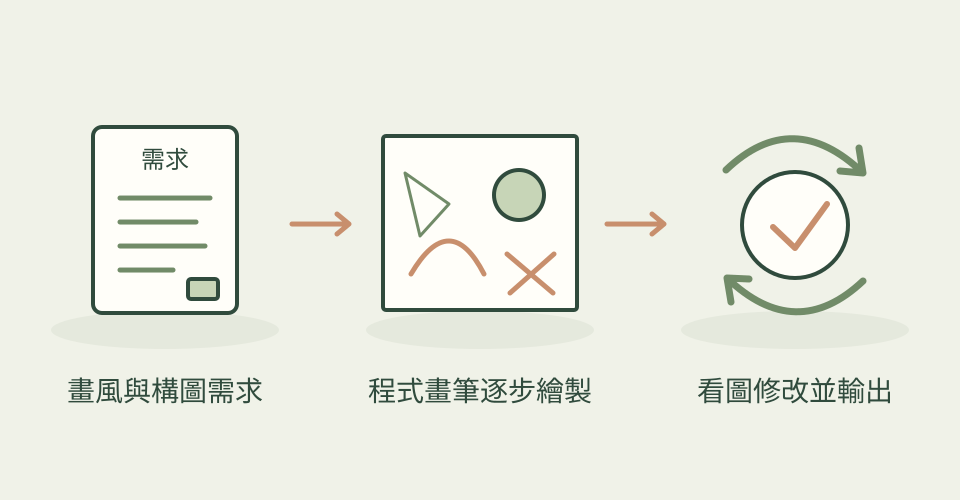

想替文章畫一片秋日湖景，又希望紅色小舟和標題留白能放在指定位置？Claude Drawing 讓 AI 先規劃構圖，再以 Python 寫場景腳本，呼叫畫筆與材質工具畫圖。你可以要求它改樹的位置、調色或重畫倒影，用程式逐步接近需求。
它怎麼幫忙
作者整理了 83 種畫風及對應範例，包含水墨、水彩、顆粒繪本、剪紙、像素與柔光 3D 外觀。AI 先選畫風和構圖，渲染後查看圖片，對照該畫風的問題清單修正，通常安排 2–4 輪。固定隨機種子可重現畫面；保存階段快照後能組成作畫 GIF，部分範例另有角色或形變動畫。
三步驟看懂這個技能

先選畫風並安排構圖，以程式繪製、看圖修正，再交付點陣圖與階段快照；本站功能示意，非作者成果或技能實測。
功能示意・本站繪製 放大查看可以這樣開口
這是一個可依需求修改的委託範例。
用水彩畫一片秋日湖景：右側兩棵橙黃樹，湖面一艘紅色小舟，右上保留可放活動標題的天空。先交預覽，保留同一個 seed 調整構圖與倒影；確認後輸出 PNG，以及從背景到小舟逐步完成的 GIF。
適合什麼工作
適合需要文章配圖、教學畫面、簡單繪本場景，且願意讓 AI 寫程式再逐輪看圖調整的編輯、插畫工作者與內容創作者。需要精確固定品牌角色時仍要提供參考並人工核對，不能只憑畫風名稱保證一致。
開始之前
- 準備工具
- 需要 Python、numpy、Pillow，以及能寫程式並查看圖片的 AI 助手；中文題字需 CJK 字型。作者以 Claude Code 的技能路徑示範，其他助手需調整路徑與執行環境。渲染使用 CPU，不必 GPU。
- 使用成本
- 專案採 MIT 授權。直接畫圖路線不需圖像生成 API、API key 或生圖額度；協助規劃、寫腳本與修圖的 AI 助手仍依訂閱或 token 用量計費。
- 交付內容
- PNG 等點陣圖片、可重跑的 Python 場景腳本、分階段快照與 GIF；3D 風格指的是畫面外觀，不代表交付可編輯 3D 模型。
- 先留意
- 2026-11-12 首次收錄，並非今天發布。204 星仍屬小眾專案，沒有前次觀察可計算增長。圖為作者隨附成果，本站沒有執行候選程式，也未驗證跨助手相容性或作者列出的渲染速度；按筆畫分層匯出仍列在作者 roadmap，不能當作既有能力。
作者與來源
本文依作者公開說明整理，沒有實際執行這個專案。功能插圖由本站繪製，原作者範例另行標示；並非本站執行技能的測試結果。GitHub 星數為專案總量，觀察時間為 2026年11月13日 08:34（台北時間）。
與前次快照相比增加 14 星；這不是 GitHub Trending 排名。